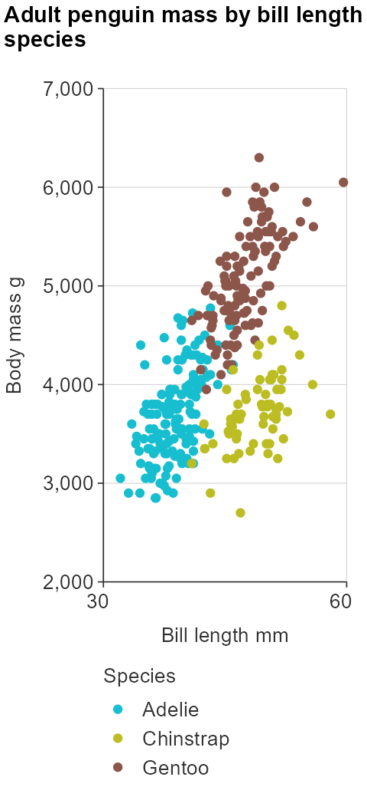

Working with quoted inputs
In shiny, it is often easier to work with quoted variables. For ggplot wrapper function, wrap the variables in !!sym, as shown below.
gg_point_col(penguins,
x_var = !!sym("bill_length_mm"),
y_var = !!sym("body_mass_g"),
col_var = !!sym("species"))
Mobile friendly apps
A difficulty with shiny is making shiny apps that display graphs that work on mobile phones in portrait mode.
They often look unreadable (in portrait), as:
- titles neeed to start from the far left of the plot, and be left-aligned
- titles need to be wrapped
- x scale needs the minimum of labels to not look clutterred
- legends need to be on the bottom
- font sizes need to be appropriate
simplevis provides mobile support for plots through a mobile argument, which makes the above changes.
plot_data <- storms %>%
group_by(year, status) %>%
summarise(wind = mean(wind))
gg_point_col(penguins,
x_var = bill_length_mm,
y_var = body_mass_g,
col_var = species,
title = "Adult penguin mass by bill length and species",
mobile = TRUE)
From the simplevis templates, the mobileDetect function in the ui.R and associated javascript in the www/js/mobile.js returns a TRUE or FALSE input$isMobile value if the user is on a mobile device.
This input$isMobile TRUE or FALSE value can then be added to the mobile argument in the simplevis gg_* function in the server.R.
One reliable way to ensure the plot viewed by mobile users is in the ui.R to use conditional panels to provide a plotly object to non-mobile users and a plot object to mobile users.
This method is demonstrated in the simplevis templates.
App demos
Users can view how simplevis functions work within shinyapps by using the shiny_demo functions, and then clicking on the download_code button to access a zip file of the code.
shiny_demo("template1") # a graph and table
shiny_demo("template2") # a leaflet map, as well as graph and tableThanks!
Thanks to Gervasio Marchand for creating the code to identify whether users are on a mobile device as described here